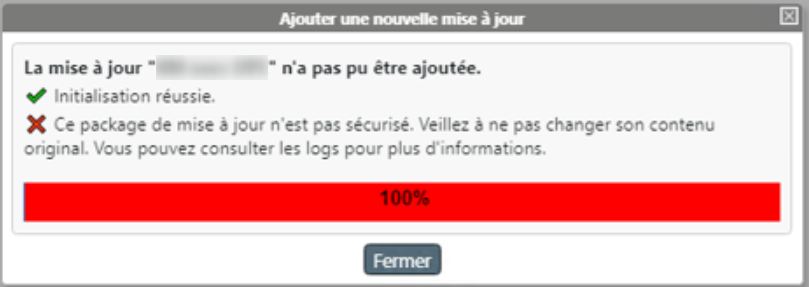
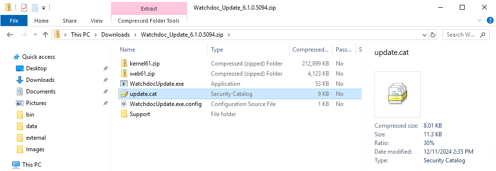
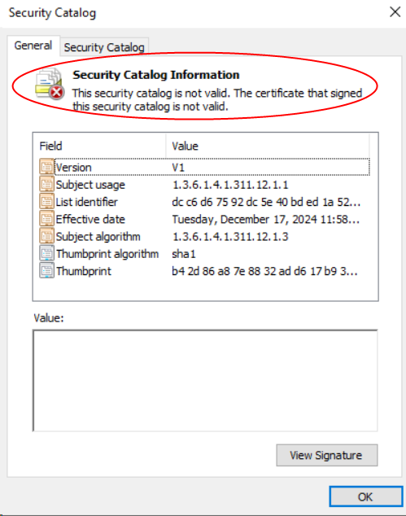
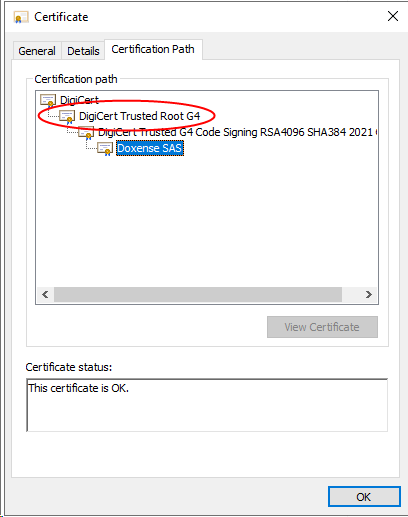
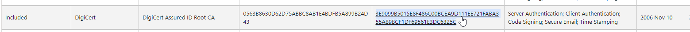
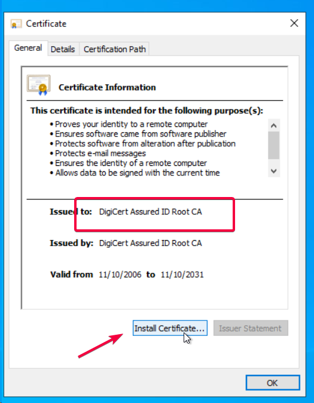
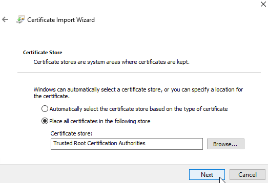
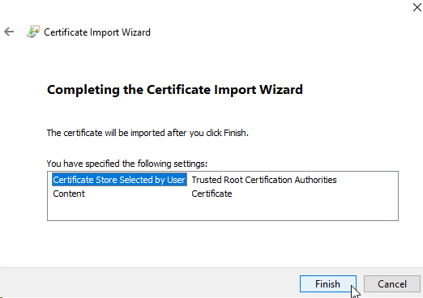

Impossible de mettre à jour : package non-sécurisé
Contexte
Lors d'une mise à jour des serveurs d'un domaine, lorsqu'on tente d'ajouter un package avant de le propager ,la mise à jour échoue.
Le message "la mise à jour n'a pas pu être ajoutée" - "Ce package de mise à jour n'est pas sécurisé" s'affiche :

Cause
Ce comportement survient notamment lorsque le package de mise à jour contient un fichier update.cat non valide.
Pour vérifier la validité du certificat :
-
ouvrez le package d'installation téléchargé et décompressé ;
-
ouvrez le "Security Catalog" en cliquant sur le fichier update.cat :

-
dans l'interface Security catalog, vérifiez les informations relatives au catalogue de sécurité :

-
dans l'interface Security catalog, cliquez sur View signature, puis View Certificate pour connaître le nom du certificat :

-
Lancez le gestionnaire de certificats pour vérifier que le certificat attendu ne figure pas dans la liste :
Résolution
Si le certificat ne figure pas dans la liste, il convient d'installer un certificat valide DigiCert sur le serveur.
-
rendez-vous sur le site Microsoft CCADB (https://ccadb.my.salesforce-sites.com/microsoft/IncludedCACertificateReportForMSFT)
-
téléchargez le certificat DigiCert Assured ID Root CA de nov. 2026
3E9099B5015E8F486C00BCEA9D111EE721FABA355A89BCF1DF69561E3DC6325C
-
une fois le certificat téléchargé, installez-le :

-
Cochez la case Place all certificates in the following store ;
-
Enregistrez-le dans le dossier Trusted Root Certification Authorities :

-
Poursuivez l'installation en cliquant sur le bouton Finish:

-
Une fois le certificat installé, relancez la mise à jour de Watchdoc via WSC.